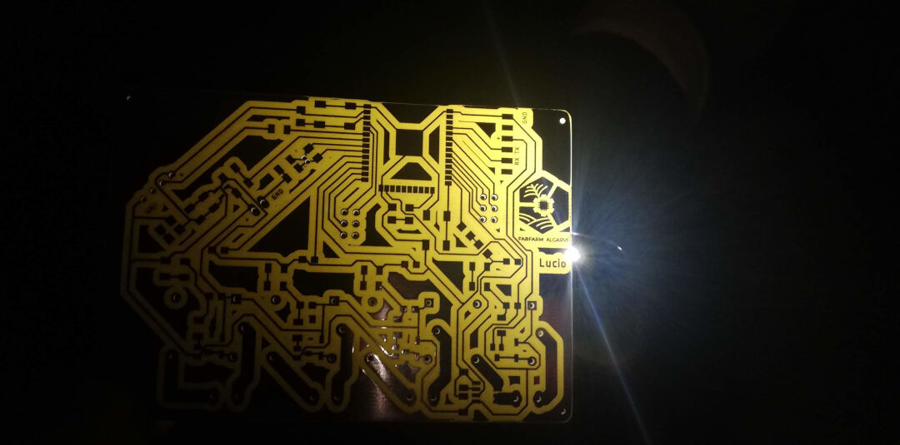

Embedded Networking and Communications
Group assignment
- Send a message between two projects
Individual assignment
- Design, build, and connect wired or wireless node(s) with network or bus addresses
Learning outcomes:
- Demonstrate workflows used in network design
- Implement and interpret networking protocols and/or communication protocols
Have you:
- Linked to the group assignment page
- Documented your project
- Documented what you have learned from implementing networking and/or communication protocols
- Explained the programming process/es you used.
- Outlined problems and how you fixed them
- Included design files (or linked to where they are located if you are using a board you have designed and fabricated earlier) and original code.
Software Used
- vscode
- Platformio
- Arduino IDE
- Arduino Json Website
- Autodesk Eagle
- PCB-Gcode ULP for Autodesk Eagle
- Auto Leveller
Files
- Gitlab Fabcloud project page containing the pcb, enclosure and firmware.
- Firmware
- Board Files
- Enclosure
Group Assignment
Go to group assignment page
Index
- Introduction
- Software Used
- Files
- Group Assignment
- Network Diagram
- PCB
- Designing my Irrigation System Board
- Milling the PCB
- Soldering and testing/Debugging
- Burning the firmware
- Debugging Again
- Network
- Network Coding
- Connecting C++ and the HTML with Arduino Json
- Hero Shot
Network Diagram
Introduction
Designing my Irrigation System Board
After tinkering with an ESP32 Development kit for a while, I had an idea of what I needed for my PCB. So let's see the list of capabilities I want for it:
- Control:
- 3 valve relays;
- 1 pump relay;
- Sense:
- Temperature and humidity sensor;
- Amp meter expansion header (for pump);
- Battery charging/sensing;
- RTC clock expansion header or solder pad;
With the requirements in hand, I went looking for an Eagle library for the ESP-WROOM-32 and found several:
After reviewing all of them, I decided to use the one from MacroYau/MacroYau.

Because I want maximum compatibility with the dev kits for ESP32 I was used to, I went looking for and found an ESP32 Wroom pinout that I used to name the pins.

Next step was to go and attach net wires to each pin. I wish I did this in the order I am presenting as it would have saved me redoing many wires I connected wrongly in the first place. The lesson is logical pin numbers and physical pin numbers are not always the same, so with that in mind, I connected them this time correctly.
That's the end result:
The relay I found at snapeda is not the same model as the one I have, but the footprint is.
The relay circuit I found online here at web.archive schematics below.

With the schematics in hand, I drew the following in Eagle:

For the battery circuit, I followed a circuit on the web page Random Nerds Tutorial.

Since I don't have the TP4056 module for now, my circuit will contain only the sensing part.
The voltage divider resistor was calculated using the online calculator here.

For the future, I found the library for the TP4056 here thanks to a tip from Luis Carvão, my remote instructor.
The humidity Sensor library can be found here. With it in hand, I simply had to net some wires to the ESP32 pin 32

As for the current sensor, I chose to use the ACS712. The library I found on this Github. The finished Schematics is below:

I got the Real-time clock library as well at Snapeda, but for now, I will not use it, so the full Schematics I drew is below:

After some time staring at the Schematics, I realized a few errors. I forgot to connect the relays LED's resistor to VCC and also forgot to include a reset and a program button necessary to put the ESP on programming mode, as well as forgot to include headers for the serial mode and for expandability, and finally, I decided to include a crystal for better timekeeping.
I then drew the Reset and Program buttons:

Here I corrected the relays by adding the VCC as well as added an optocoupler in between the signal and the relays to prevent any feedback from the relays.
Here I added TX RX header, crystal for better internal RTC timekeeping, and ESP32DEVKIT compatibility headers.

So hopefully, finally my final Schematics...

Now I will start the routing work on the board. I have to say I am a bit anxious as I have never made such a complex PCB!
How encouraging is what I see when I move to the board mode in Eagle!!!

First thing I do is to move the devkit footprint to the center along with the ESP32

After trying for a while to connect by hand, I give a try on the autorouter. I had to stop after a few minutes, and the result is laughable. I will try again moving the ESP32 up, and if not, I will not attempt an ESP32devkit compatibility.

So I gave up on the DevKit compatibility and decided to move slowly this time. I created a backup of my work that I opened in another Eagle window and deleted all the components I was not working on. The schematics and board looked like this. My idea is to copy from the backup the components back as I finish each step. So below is how step one looks.

In the Board, you can see #1 the relay and #2 the current sensor circuit and #3 the onboard LED.
So now I copied the first valve relay, and when I went to the board, Eagle presented me with the pasted components. I believe this way is much easier.

So far, the board looks like this. I haven't routed any power wires, including GND 3.3V and 5V. I will try autoroute now to have an idea and maybe route manually. The entire routing process was best described at input devices week.
After finishing the layout of the board, I decided to add the logo. Click on File, import, and Bitmap (currently, Eagle only accepts .bmp).

Choose the color to be imported.
Then select the unit, mm in my case, and the size and ok.
Because I wanted to mill the logo as opposed to stamp it, I had to move it to the top layer.
The finalized board layout with holes and milling contours as described in output devices week.
Milling
Here I show the visualization of the gcode routes with red as the trace closest to the copper to be left.

As usual and again best described at week, here follows a glimpse of the autolevel software.

Soldering and testing/Debugging
Inspecting PCB under the light.
In order to verify if the tracks are all good, I place the light under the PCB and review everything looking for shorts or missing tracks.

The underside being populated.
I place the big components last so as not to make soldering the small SMD components hard.

Reading from Serial Monitor/Burning Firmware Schematics
After soldering everything, I connect the board to my serial adapter. Below is the schematics.

I pasted the first output from the ESP32 with factory firmware. It boots!
--- Available filters and text transformations: colorize, debug, default, direct, esp32_exception_decoder, hexlify, log2file, nocontrol, printable, send_on_enter, time
--- More details at http://bit.ly/pio-monitor-filters
--- Miniterm on COM5 115200,8,N,1 ---
--- Quit: Ctrl+C | Menu: Ctrl+T | Help: Ctrl+T followed by Ctrl+H ---
ets Jun 8 2016 00:22:57
rst:0x1 (POWERON_RESET),boot:0x13 (SPI_FAST_FLASH_BOOT)
configsip: 0, SPIWP:0x00
clk_drv:0x00,q_drv:0x00,d_drv:0x00,cs0_drv:0x00,hd_drv:0x00,wp_drv:0x00
mode:DIO, clock div:2
load:0x3fff0008,len:8
load:0x3fff0010,len:3480
load:0x40078000,len:7804
ho 0 tail 12 room 4
load:0x40080000,len:252
entry 0x40080034
␛[0;32mI (45) boot: ESP-IDF v2.0-3-gbef9896 2nd stage bootloader␛[0m
␛[0;32mI (45) boot: compile time 05:59:45␛[0m
␛[0;32mI (45) boot: Enabling RNG early entropy source...␛[0m
␛[0;32mI (64) boot: SPI Speed : 40MHz␛[0m
␛[0;32mI (77) boot: SPI Mode : DIO␛[0m
␛[0;32mI (89) boot: SPI Flash Size : 4MB␛[0m
␛[0;32mI (101) boot: Partition Table:␛[0m
␛[0;32mI (113) boot: ## Label Usage Type ST Offset Length␛[0m
␛[0;32mI (136) boot: 0 phy_init RF data 01 01 0000f000 00001000␛[0m
␛[0;32mI (159) boot: 1 otadata OTA data 01 00 00010000 00002000␛[0m
␛[0;32mI (182) boot: 2 nvs WiFi data 01 02 00012000 0000e000␛[0m
␛[0;32mI (205) boot: 3 at_customize unknown 40 00 00020000 000e0000␛[0m
␛[0;32mI (228) boot: 4 ota_0 OTA app 00 10 00100000 00180000␛[0m
␛[0;32mI (252) boot: 5 ota_1 OTA app 00 11 00280000 00180000␛[0m
␛[0;32mI (275) boot: End of partition table␛[0m
␛[0;32mI (288) boot: Disabling RNG early entropy source...␛[0m
␛[0;32mI (305) boot: Loading app partition at offset 00100000␛[0m
␛[0;32mI (1481) boot: segment 0: paddr=0x00100018 vaddr=0x00000000 size=0x0ffe8 ( 65512) ␛[0m
␛[0;32mI (1481) boot: segment 1: paddr=0x00110008 vaddr=0x3f400010 size=0x1c5f0 (116208) map␛[0m
␛[0;32mI (1498) boot: segment 2: paddr=0x0012c600 vaddr=0x3ffb0000 size=0x0215c ( 8540) load␛[0m
␛[0;32mI (1528) boot: segment 3: paddr=0x0012e764 vaddr=0x40080000 size=0x00400 ( 1024) load␛[0m
␛[0;32mI (1551) boot: segment 4: paddr=0x0012eb6c vaddr=0x40080400 size=0x1b028 (110632) load␛[0m
␛[0;32mI (1630) boot: segment 5: paddr=0x00149b9c vaddr=0x400c0000 size=0x00034 ( 52) load␛[0m
␛[0;32mI (1631) boot: segment 6: paddr=0x00149bd8 vaddr=0x00000000 size=0x06430 ( 25648) ␛[0m
␛[0;32mI (1648) boot: segment 7: paddr=0x00150010 vaddr=0x400d0018 size=0x7a56c (501100) map␛[0m
␛[0;32mI (1675) heap_alloc_caps: Initializing. RAM available for dynamic allocation:␛[0m
␛[0;32mI (1697) heap_alloc_caps: At 3FFBA6B8 len 00025948 (150 KiB): DRAM␛[0m
␛[0;32mI (1719) heap_alloc_caps: At 3FFE8000 len 00018000 (96 KiB): D/IRAM␛[0m
␛[0;32mI (1740) heap_alloc_caps: At 4009B428 len 00004BD8 (18 KiB): IRAM␛[0m
␛[0;32mI (1761) cpu_start: Pro cpu up.␛[0m
␛[0;32mI (1773) cpu_start: Single core mode␛[0m
␛[0;32mI (1786) cpu_start: Pro cpu start user code␛[0m
␛[0;32mI (1846) cpu_start: Starting scheduler on PRO CPU.␛[0m
␛[0;32mI (2085) uart: queue free spaces: 10␛[0m
Bin version:0.10.0
I (2087) wifi: wifi firmware version: c604573
I (2087) wifi: config NVS flash: enabled
I (2088) wifi: config nano formating: disabled
I (2096) wifi: Init dynamic tx buffer num: 32
I (2097) wifi: wifi driver task: 3ffc4eac, prio:23, stack:3584
I (2102) wifi: Init static rx buffer num: 10
I (2106) wifi: Init dynamic rx buffer num: 0
I (2110) wifi: Init rx ampdu len mblock:7
I (2114) wifi: Init lldesc rx ampdu entry mblock:4
I (2118) wifi: wifi power manager task: 0x3ffca254 prio: 21 stack: 2560
I (2125) wifi: wifi timer task: 3ffcb2d4, prio:22, stack:3584
␛[0;31mE (2130) phy_init: PHY data partition validated␛[0m
␛[0;32mI (2152) phy: phy_version: 329, Feb 22 2017, 15:58:07, 0, 0␛[0m
I (2152) wifi: mode : softAP (3c:71:bf:10:66:e1)
I (2155) wifi: mode : sta (3c:71:bf:10:66:e0) + softAP (3c:71:bf:10:66:e1)
I (2159) wifi: mode : softAP (3c:71:bf:10:66:e1)
Burning the firmware:
In order to burn my firmware, I use Microsoft VScode with Platformio.
Before starting with the burning process, first, I had to configure the environment of Platformio. I describe this here in the project development week.
Next, I hold down the GPIO0 switch and press the reset button to enter the firmware burning mode. After that, I press on the icon to burn the firmware, and it burns. Success!
Debugging the board.
I ended up removing all the components in order to review the signals directly produced by the microprocessor.
The result from the debug was that I found out there was nothing wrong with the code or the microprocessor soldering or the immediate tracks.
What I found out was that I needed to have 220 ohms resistors added between the signal and Anode pin number 1 of each optocoupler. It turns out the optocoupler has an internal LED, and the voltage used to activate it needs to be limited.

Then R=(3.3v-1.2v)/20ma=105ohms or

I then cut the tracks and soldered the 220ohms resistors because that was what I had in hand, and it worked, but the right size is 120ohms as the online resistor calculator shows.

And this is how the schematics for the relay look like
Network Code in the firmware
There are two types of communications happening in my board that I can describe.
- The communication between the phone and the ESP32 (TCP/IP protocol)
- The communication between the C++ and the HTML Arduino Json
Phone and the ESP32
The network between the phone and the ESP32 is established thanks to a few libraries working together:
- WiFi.h
- AsyncTCP.h
- ESPAsyncWebServer.h
It is described in its documentation:
"Enables network connection (local and Internet) using the ESP32 built-in WiFi. With this library, you can initiate Servers, Clients, and send/receive UDP packets through WiFi. The shield can connect either to open or encrypted networks (WEP, WPA). The IP address can be assigned statically or through a DHCP. The library can also manage DNS."
It is described in its documentation:
"This is a fully asynchronous TCP library, aimed at enabling a trouble-free, multi-connection network environment for Espressif's ESP32 MCUs. This library is the base for ESPAsyncWebServer"
It is described in its documentation:
"Async HTTP and WebSocket Server for ESP8266 Arduino"
So basically, in my project, these libraries are responsible for establishing a network connection to a router as well as creating an access point.
They also create a web server as well as a DHCP server, and with that, it issues an IP address in case one connects to it via the access point created with this code:
//Soft Wifi Access point setup
WiFi.softAP("softap", "password_here");
IPAddress IP = WiFi.softAPIP();The connection to the router is established with this code:
//start wifi sessions as a client.
//Wifi client setup
const char* ssid = doc["data"]["ssid"];
const char* password = doc["data"]["pass"];
ssid = "fabfarm";
password = "password_here";
WiFi.begin(ssid, password);The webserver is initiated with this code AsyncWebServer server(81);
Connecting C++ and the HTML with Arduino Json
Json is the format I chose for the communication of the Web interface and the microprocessor.
ArduinoJson.h is described in its documentation as:
ArduinoJson is a C++ JSON library for Arduino and IoT (Internet Of Things)
A great source of documentation and a great assistant to create the parsing deserializeJson() program and the serializing serializeJson(doc, Serial) program is an Arduino Json Website
In order to use the library, I had first to create a json file. This file will be used by the assistant in order to generate code for the C++.
Having created the json file by hand, it's time to create the programs in C++. The assistant will then create a C++ code to serialize as well as parse data from and to the json file that is inside the file system.

In the dialog box on the left, I pasted the json file contents.
The website generates the codes automatically.

Below I show the code generated in the assistant.
Parsing program (Deserialize/decode)
const size_t capacity = JSON_ARRAY_SIZE(1) + JSON_ARRAY_SIZE(2) + 2*JSON_ARRAY_SIZE(3) + JSON_OBJECT_SIZE(2) + 6*JSON_OBJECT_SIZE(4) + JSON_OBJECT_SIZE(5) + 3*JSON_OBJECT_SIZE(6) + 540;
DynamicJsonDocument doc(capacity);
const char* json = "{\"data\":{\"currentTime\":\"Wednesday, June 24 2020 23:49:23\",\"temperature\":\"22.30\",\"humidity\":\"74.00\",\"override\":0,\"ssid\":\"rato\",\"pass\":\"imakestuff\"},\"relays\":[{\"name\":\"Fruit Tree\",\"pin\":25,\"isRunning\":1,\"isEnabled\":0,\"times\":[{\"startTime\":\"01:01\",\"duration\":0,\"hour\":1,\"min\":1}]},{\"name\":\"Vegie Garden\",\"pin\":26,\"isRunning\":1,\"isEnabled\":0,\"status\":1,\"times\":[{\"startTime\":\"02:02\",\"duration\":32,\"hour\":2,\"min\":2},{\"startTime\":\"02:02\",\"duration\":32,\"hour\":2,\"min\":2}]},{\"name\":\"Cypress Hill\",\"pin\":33,\"isRunning\":1,\"isEnabled\":0,\"status\":1,\"times\":[{\"startTime\":\"03:03\",\"duration\":60,\"hour\":3,\"min\":3},{\"startTime\":\"03:03\",\"duration\":60,\"hour\":3,\"min\":3},{\"startTime\":\"03:03\",\"duration\":60,\"hour\":3,\"min\":3}]}]}";
deserializeJson(doc, json);
JsonObject data = doc["data"];
const char* data_currentTime = data["currentTime"]; // "Wednesday, June 24 2020 23:49:23"
const char* data_temperature = data["temperature"]; // "22.30"
const char* data_humidity = data["humidity"]; // "74.00"
int data_override = data["override"]; // 0
const char* data_ssid = data["ssid"]; // "rato"
const char* data_pass = data["pass"]; // "imakestuff"
JsonArray relays = doc["relays"];
JsonObject relays_0 = relays[0];
const char* relays_0_name = relays_0["name"]; // "Fruit Tree"
int relays_0_pin = relays_0["pin"]; // 25
int relays_0_isRunning = relays_0["isRunning"]; // 1
int relays_0_isEnabled = relays_0["isEnabled"]; // 0
JsonObject relays_0_times_0 = relays_0["times"][0];
const char* relays_0_times_0_startTime = relays_0_times_0["startTime"]; // "01:01"
int relays_0_times_0_duration = relays_0_times_0["duration"]; // 0
int relays_0_times_0_hour = relays_0_times_0["hour"]; // 1
int relays_0_times_0_min = relays_0_times_0["min"]; // 1
JsonObject relays_1 = relays[1];
const char* relays_1_name = relays_1["name"]; // "Vegie Garden"
int relays_1_pin = relays_1["pin"]; // 26
int relays_1_isRunning = relays_1["isRunning"]; // 1
int relays_1_isEnabled = relays_1["isEnabled"]; // 0
int relays_1_status = relays_1["status"]; // 1
JsonObject relays_1_times_0 = relays_1["times"][0];
const char* relays_1_times_0_startTime = relays_1_times_0["startTime"]; // "02:02"
int relays_1_times_0_duration = relays_1_times_0["duration"]; // 32
int relays_1_times_0_hour = relays_1_times_0["hour"]; // 2
int relays_1_times_0_min = relays_1_times_0["min"]; // 2
JsonObject relays_1_times_1 = relays_1["times"][1];
const char* relays_1_times_1_startTime = relays_1_times_1["startTime"]; // "02:02"
int relays_1_times_1_duration = relays_1_times_1["duration"]; // 32
int relays_1_times_1_hour = relays_1_times_1["hour"]; // 2
int relays_1_times_1_min = relays_1_times_1["min"]; // 2
JsonObject relays_2 = relays[2];
const char* relays_2_name = relays_2["name"]; // "Cypress Hill"
int relays_2_pin = relays_2["pin"]; // 33
int relays_2_isRunning = relays_2["isRunning"]; // 1
int relays_2_isEnabled = relays_2["isEnabled"]; // 0
int relays_2_status = relays_2["status"]; // 1
JsonArray relays_2_times = relays_2["times"];
JsonObject relays_2_times_0 = relays_2_times[0];
const char* relays_2_times_0_startTime = relays_2_times_0["startTime"]; // "03:03"
int relays_2_times_0_duration = relays_2_times_0["duration"]; // 60
int relays_2_times_0_hour = relays_2_times_0["hour"]; // 3
int relays_2_times_0_min = relays_2_times_0["min"]; // 3
JsonObject relays_2_times_1 = relays_2_times[1];
const char* relays_2_times_1_startTime = relays_2_times_1["startTime"]; // "03:03"
int relays_2_times_1_duration = relays_2_times_1["duration"]; // 60
int relays_2_times_1_hour = relays_2_times_1["hour"]; // 3
int relays_2_times_1_min = relays_2_times_1["min"]; // 3
JsonObject relays_2_times_2 = relays_2_times[2];
const char* relays_2_times_2_startTime = relays_2_times_2["startTime"]; // "03:03"
int relays_2_times_2_duration = relays_2_times_2["duration"]; // 60
int relays_2_times_2_hour = relays_2_times_2["hour"]; // 3
int relays_2_times_2_min = relays_2_times_2["min"]; // 3Serializing Program (encode)
const size_t capacity = JSON_ARRAY_SIZE(1) + JSON_ARRAY_SIZE(2) + 2*JSON_ARRAY_SIZE(3) + JSON_OBJECT_SIZE(2) + 6*JSON_OBJECT_SIZE(4) + JSON_OBJECT_SIZE(5) + 3*JSON_OBJECT_SIZE(6);
DynamicJsonDocument doc(capacity);
JsonObject data = doc.createNestedObject("data");
data["currentTime"] = "Wednesday, June 24 2020 23:49:23";
data["temperature"] = "22.30";
data["humidity"] = "74.00";
data["override"] = 0;
data["ssid"] = "rato";
data["pass"] = "imakestuff";
JsonArray relays = doc.createNestedArray("relays");
JsonObject relays_0 = relays.createNestedObject();
relays_0["name"] = "Fruit Tree";
relays_0["pin"] = 25;
relays_0["isRunning"] = 1;
relays_0["isEnabled"] = 0;
JsonArray relays_0_times = relays_0.createNestedArray("times");
JsonObject relays_0_times_0 = relays_0_times.createNestedObject();
relays_0_times_0["startTime"] = "01:01";
relays_0_times_0["duration"] = 0;
relays_0_times_0["hour"] = 1;
relays_0_times_0["min"] = 1;
JsonObject relays_1 = relays.createNestedObject();
relays_1["name"] = "Vegie Garden";
relays_1["pin"] = 26;
relays_1["isRunning"] = 1;
relays_1["isEnabled"] = 0;
relays_1["status"] = 1;
JsonArray relays_1_times = relays_1.createNestedArray("times");
JsonObject relays_1_times_0 = relays_1_times.createNestedObject();
relays_1_times_0["startTime"] = "02:02";
relays_1_times_0["duration"] = 32;
relays_1_times_0["hour"] = 2;
relays_1_times_0["min"] = 2;
JsonObject relays_1_times_1 = relays_1_times.createNestedObject();
relays_1_times_1["startTime"] = "02:02";
relays_1_times_1["duration"] = 32;
relays_1_times_1["hour"] = 2;
relays_1_times_1["min"] = 2;
JsonObject relays_2 = relays.createNestedObject();
relays_2["name"] = "Cypress Hill";
relays_2["pin"] = 33;
relays_2["isRunning"] = 1;
relays_2["isEnabled"] = 0;
relays_2["status"] = 1;
JsonArray relays_2_times = relays_2.createNestedArray("times");
JsonObject relays_2_times_0 = relays_2_times.createNestedObject();
relays_2_times_0["startTime"] = "03:03";
relays_2_times_0["duration"] = 60;
relays_2_times_0["hour"] = 3;
relays_2_times_0["min"] = 3;
JsonObject relays_2_times_1 = relays_2_times.createNestedObject();
relays_2_times_1["startTime"] = "03:03";
relays_2_times_1["duration"] = 60;
relays_2_times_1["hour"] = 3;
relays_2_times_1["min"] = 3;
JsonObject relays_2_times_2 = relays_2_times.createNestedObject();
relays_2_times_2["startTime"] = "03:03";
relays_2_times_2["duration"] = 60;
relays_2_times_2["hour"] = 3;
relays_2_times_2["min"] = 3;
serializeJson(doc, Serial);With the help of my friend Jeff Knight, without whom I would not be able to do it alone, the code generated was simplified for my program. I then created a few functions, and the following picture shows the serial monitor printing the result of a deserialization of the json file read.

I made this diagram so I don't forget how it works:

Hero shot
In the end, it works like this: